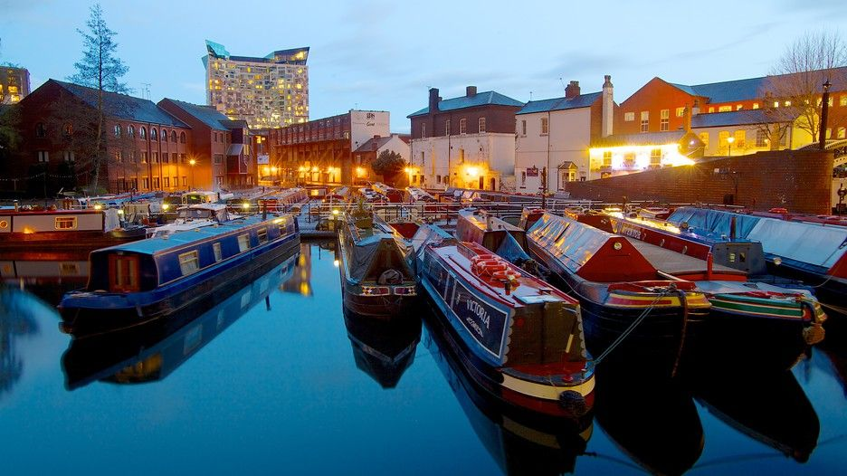
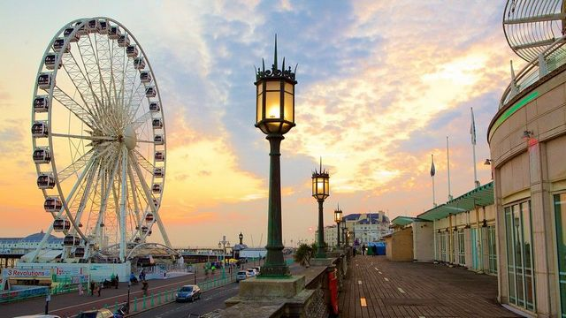

Tourism in England
England is one of the most important countries on the world tourist map. It has a long history and a culture that is spread throughout the world through English England, the largest country in the United Kingdom, is bordered to the north by Scotland. In the west, Wales is one of the constituent states of the United Kingdom, while its northwestern border is surrounded by the Irish Sea and the Celtic Sea to the southwest, The cities of England are generally the most popular tourist destinations in the UK, especially the capital London, which is the first destination of tourism in England followed by Manchester and Liverpool and others.
Before traveling to England
Here is some information you should know before traveling to England First, travel to England requires a "visa" visa where you can stay in the UK for a maximum of 6 months The British currency is sterling. We all know that Britain has recently emerged from the European Union. As for transport, public transport is considered the most appropriate and the cheapest. Taxis are highly cluttered, so we advise you to avoid them. For restaurants in England, you will find plenty of restaurants in the Middle East, Indian and Oriental, along with Western restaurants of course, which makes Britain a country of diversity.
What are the seasons of tourism in England?
The best time to travel to England and England in particular is between January and February and between mid-September and November in addition to March and April, this period will avoid overcrowding and large numbers of tourists and you will save a lot in housing and other
The most important tourist places in England
The best time to travel to England and England in particular is between January and February and between mid-September and November in addition to March and April, this period will avoid overcrowding and large numbers of tourists and you will save a lot in housing and other

